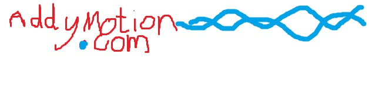

 Film
Film
WELCOME
Welcome to AddyMotion.com
AddyMotion is the website and portfolio of Alastair Toft, featuring videos, games, level design and more. I am a student studying A levels in Dorset, England and this site is the home for various projects that I have created over several years. This page gives a selection of some of my latest projects.